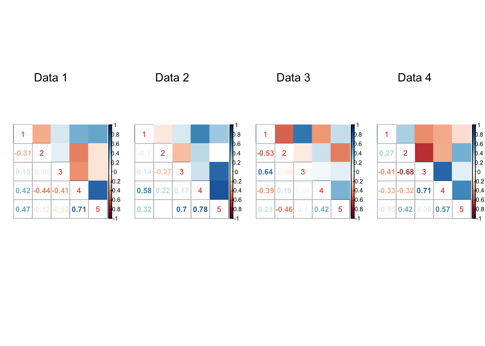
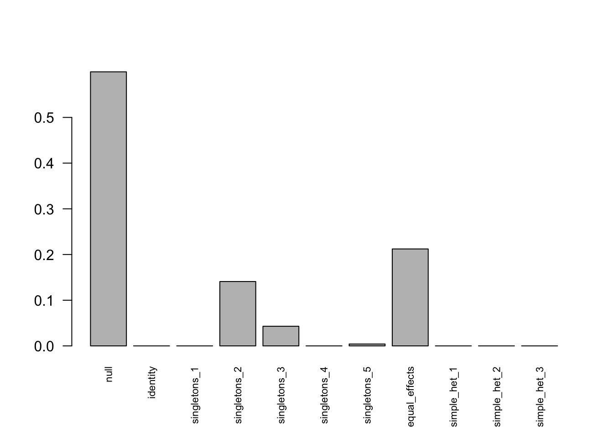

Last updated: 2018-08-21
workflowr checks: (Click a bullet for more information) ✔ R Markdown file: up-to-date
Great! Since the R Markdown file has been committed to the Git repository, you know the exact version of the code that produced these results.
✔ Environment: empty
Great job! The global environment was empty. Objects defined in the global environment can affect the analysis in your R Markdown file in unknown ways. For reproduciblity it’s best to always run the code in an empty environment.
✔ Seed:
set.seed(1)
The command set.seed(1) was run prior to running the code in the R Markdown file. Setting a seed ensures that any results that rely on randomness, e.g. subsampling or permutations, are reproducible.
✔ Session information: recorded
Great job! Recording the operating system, R version, and package versions is critical for reproducibility.
✔ Repository version: 3eb1f9b
wflow_publish or wflow_git_commit). workflowr only checks the R Markdown file, but you know if there are other scripts or data files that it depends on. Below is the status of the Git repository when the results were generated:
Ignored files:
Ignored: .DS_Store
Ignored: .Rhistory
Ignored: .Rproj.user/
Ignored: analysis/.DS_Store
Ignored: analysis/.Rhistory
Ignored: analysis/include/.DS_Store
Ignored: data/.DS_Store
Ignored: docs/.DS_Store
Ignored: output/.DS_Store
Untracked files:
Untracked: analysis/Classify.Rmd
Untracked: analysis/EstimateCorMaxEM.Rmd
Untracked: analysis/EstimateCorMaxEMGD.Rmd
Untracked: analysis/EstimateCorPrior.Rmd
Untracked: analysis/EstimateCorSol.Rmd
Untracked: analysis/HierarchicalFlashSim.Rmd
Untracked: analysis/Mash_GTEx.Rmd
Untracked: analysis/MeanAsh.Rmd
Untracked: analysis/OutlierDetection.Rmd
Untracked: analysis/OutlierDetection2.Rmd
Untracked: analysis/OutlierDetection3.Rmd
Untracked: analysis/OutlierDetection4.Rmd
Untracked: analysis/Test.Rmd
Untracked: analysis/mash_missing_row.Rmd
Untracked: code/MashClassify.R
Untracked: code/MashCorResult.R
Untracked: code/MashNULLCorResult.R
Untracked: code/MashSource.R
Untracked: code/Weight_plot.R
Untracked: code/addemV.R
Untracked: code/estimate_cor.R
Untracked: code/generateDataV.R
Untracked: code/johnprocess.R
Untracked: code/sim_mean_sig.R
Untracked: code/summary.R
Untracked: data/Blischak_et_al_2015/
Untracked: data/scale_data.rds
Untracked: docs/figure/Classify.Rmd/
Untracked: docs/figure/OutlierDetection.Rmd/
Untracked: docs/figure/OutlierDetection2.Rmd/
Untracked: docs/figure/OutlierDetection3.Rmd/
Untracked: docs/figure/Test.Rmd/
Untracked: docs/figure/mash_missing_whole_row_5.Rmd/
Untracked: docs/include/
Untracked: output/AddEMV/
Untracked: output/CovED_UKBio_strong.rds
Untracked: output/CovED_UKBio_strong_Z.rds
Untracked: output/Flash_UKBio_strong.rds
Untracked: output/MASH.10.em2.result.rds
Untracked: output/MASH.10.mle.result.rds
Untracked: output/MASHNULL.V.result.1.rds
Untracked: output/MASHNULL.V.result.10.rds
Untracked: output/MASHNULL.V.result.11.rds
Untracked: output/MASHNULL.V.result.12.rds
Untracked: output/MASHNULL.V.result.13.rds
Untracked: output/MASHNULL.V.result.14.rds
Untracked: output/MASHNULL.V.result.15.rds
Untracked: output/MASHNULL.V.result.16.rds
Untracked: output/MASHNULL.V.result.17.rds
Untracked: output/MASHNULL.V.result.18.rds
Untracked: output/MASHNULL.V.result.19.rds
Untracked: output/MASHNULL.V.result.2.rds
Untracked: output/MASHNULL.V.result.20.rds
Untracked: output/MASHNULL.V.result.3.rds
Untracked: output/MASHNULL.V.result.4.rds
Untracked: output/MASHNULL.V.result.5.rds
Untracked: output/MASHNULL.V.result.6.rds
Untracked: output/MASHNULL.V.result.7.rds
Untracked: output/MASHNULL.V.result.8.rds
Untracked: output/MASHNULL.V.result.9.rds
Untracked: output/MashCorSim--midway/
Untracked: output/Mash_EE_Cov_0_plusR1.rds
Untracked: output/UKBio_mash_model.rds
Unstaged changes:
Modified: analysis/Mash_UKBio.Rmd
Modified: analysis/mash_missing_samplesize.Rmd
Modified: output/Flash_T2_0.rds
Modified: output/Flash_T2_0_mclust.rds
Modified: output/Mash_model_0_plusR1.rds
Modified: output/PresiAddVarCol.rds
library(mashr)Loading required package: ashrsource('../code/estimate_cor.R')
source('../code/generateDataV.R')
library(knitr)
library(kableExtra)\[ V = I_{5} \]
set.seed(1)
n = 3000; p = 5
U0 = matrix(0, p,p)
Utrue = list(U0 = U0)
V = diag(p)
data = generate_data(n=n, p=p, V = V, Utrue = Utrue)mash model
samp = 1:(n/2)
if(is.null(dim(data$Shat))){
data$Shat = matrix(data$Shat, n, p)
}
data.samp = lapply(data, function(l) l[samp,])
m.data = mash_set_data(Bhat = data.samp$Bhat, Shat = data.samp$Shat)
U.c = cov_canonical(m.data)
# m.1by1 = mash_1by1(m.data)
# strong = get_significant_results(m.1by1)
Vhat = estimate_null_correlation(m.data)
Vhat.em = estimateV(m.data, U.c, init_rho = c(-0.5,0,0.5),tol=1e-4, optmethod='em2')$V
m.data.em = mash_set_data(Bhat=data.samp$Bhat, Shat = data.samp$Shat, V = Vhat.em)
m.model.em = mash(m.data.em, U.c, verbose=FALSE)res = rbind(c(norm(Vhat.em-diag(5), 'F'), get_loglik(m.model.em), length(get_significant_results(m.model.em))))
colnames(res) = c('F.error', 'loglik', '# significance')
row.names(res) = 'EM'
res %>% kable() %>% kable_styling()| F.error | loglik | # significance | |
|---|---|---|---|
| EM | 0.1178653 | -10767.46 | 0 |
We simulate 20 null data sets with non identity V, and check the mash results.
set.seed(1)
n = 2000; p = 5
U0 = matrix(0, p,p)
Utrue = list(U0 = U0)
for(t in 1:20){
V = clusterGeneration::rcorrmatrix(p)
data = generate_data(n=n, p=p, V = V, Utrue = Utrue)
samp = 1:(n/2)
if(is.null(dim(data$Shat))){
data$Shat = matrix(data$Shat, n, p)
}
data.samp = lapply(data, function(l) l[samp,])
m.data = mash_set_data(Bhat = data.samp$Bhat, Shat = data.samp$Shat)
U.c = cov_canonical(m.data)
Vhat = estimate_null_correlation(m.data, apply_lower_bound = FALSE)
Vhat.em = estimateV(m.data, U.c, init_rho = c(-0.5,0,0.5), tol=1e-4, optmethod='em2')
R <- tryCatch(chol(Vhat.em$V),error = function (e) FALSE)
if(!is.matrix(R)){
pd = FALSE
Vhat.em$V = as.matrix(Matrix::nearPD(Vhat.em$V, conv.norm.type = 'F', keepDiag = TRUE)$mat)
}else{
pd = TRUE
}
m.data.trunc = mash_set_data(data.samp$Bhat, data.samp$Shat, V = Vhat)
m.model.trunc = mash(m.data.trunc, U.c)
m.data.em = mash_set_data(Bhat=data.samp$Bhat, Shat = data.samp$Shat, V = Vhat.em$V)
m.model.em = mash(m.data.em, U.c)
saveRDS(list(pd = pd, V.true = V, V.em = Vhat.em, V.trunc = Vhat, data = data, sample = samp, model.trunc = m.model.trunc, model.em = m.model.em),
paste0('../output/MASHNULL.V.result.',t,'.rds'))
}files = dir("../output/"); files = files[grep("MASHNULL.V.result",files)]
times = length(files)
result = vector(mode="list",length = times)
for(i in 1:times) {
result[[i]] = readRDS(paste("../output/", files[[i]], sep=""))
}par(mfrow=c(1,4))
for(t in 1:20){
corrplot::corrplot.mixed(result[[t]]$V.true, upper='color',cl.lim=c(-1,1))
mtext(paste0('Data ', t), at=2.5, line=-5)
}
| Version | Author | Date |
|---|---|---|
| 67990e8 | zouyuxin | 2018-08-21 |
| Version | Author | Date |
|---|---|---|
| 67990e8 | zouyuxin | 2018-08-21 |
| Version | Author | Date |
|---|---|---|
| 67990e8 | zouyuxin | 2018-08-21 |
| Version | Author | Date |
|---|---|---|
| 67990e8 | zouyuxin | 2018-08-21 |
| Version | Author | Date |
|---|---|---|
| 67990e8 | zouyuxin | 2018-08-21 |
EM_res = c(); Trunc_res = c()
for(t in 1:20){
err = norm(result[[t]]$V.em$V - result[[t]]$V.true, type='F')
loglik = get_loglik(result[[t]]$model.em)
sig = length(get_significant_results(result[[t]]$model.em))
EM_res = rbind(EM_res, c(err, loglik, sig))
err = norm(result[[t]]$V.trunc - result[[t]]$V.true, type='F')
loglik = get_loglik(result[[t]]$model.trunc)
sig = length(get_significant_results(result[[t]]$model.trunc))
Trunc_res = rbind(Trunc_res, c(err, loglik, sig))
}mash results based on EM estimated V
colnames(EM_res) = c('F.error', 'loglik', '# significance')
EM_res %>% kable() %>% kable_styling()| F.error | loglik | # significance |
|---|---|---|
| 0.1420401 | -6233.044 | 0 |
| 0.1139972 | -4937.284 | 0 |
| 0.1508036 | -6045.184 | 0 |
| 0.0598159 | -5634.970 | 0 |
| 0.0803792 | -4498.151 | 2 |
| 0.1383140 | -5844.997 | 0 |
| 0.1223280 | -5527.147 | 3 |
| 0.0926035 | -4407.713 | 0 |
| 0.1893671 | -6227.554 | 0 |
| 0.1369380 | -4719.186 | 0 |
| 0.0697218 | -4974.055 | 0 |
| 0.0922341 | -5075.397 | 0 |
| 0.0588698 | -5705.655 | 0 |
| 0.1365943 | -5494.810 | 0 |
| 0.1478870 | -5734.789 | 0 |
| 0.1017556 | -6631.884 | 0 |
| 0.0838991 | -5504.995 | 0 |
| 0.0368434 | -5362.641 | 0 |
| 0.1262740 | -5736.854 | 0 |
| 0.1346086 | -4258.128 | 0 |
mash results based on original estimated V
colnames(Trunc_res) = c('F.error', 'loglik', '# significance')
Trunc_res %>% kable() %>% kable_styling()| F.error | loglik | # significance |
|---|---|---|
| 0.2812578 | -6263.074 | 0 |
| 0.2554575 | -4976.046 | 0 |
| 0.2110287 | -6082.465 | 0 |
| 0.2557471 | -5680.419 | 0 |
| 0.3482540 | -4581.797 | 0 |
| 0.2093880 | -5876.652 | 0 |
| 0.3888612 | -5557.576 | 0 |
| 0.4217467 | -4493.518 | 0 |
| 0.3356877 | -6272.532 | 0 |
| 0.2516301 | -4786.389 | 0 |
| 0.2615190 | -5022.811 | 0 |
| 0.2619482 | -5134.581 | 0 |
| 0.3126799 | -5762.630 | 0 |
| 0.1615910 | -5523.273 | 0 |
| 0.2107430 | -5768.520 | 0 |
| 0.3014296 | -6652.888 | 0 |
| 0.2136931 | -5566.659 | 0 |
| 0.2679966 | -5403.671 | 0 |
| 0.2831679 | -5794.189 | 0 |
| 0.2645471 | -4312.278 | 0 |
Investigate Data 7
data = result[[7]]$data
V.true = result[[7]]$V.true
V.em = result[[7]]$V.em
model.em = result[[7]]$model.em
barplot(get_estimated_pi(model.em), las=2, cex.names = 0.7)
| Version | Author | Date |
|---|---|---|
| 67990e8 | zouyuxin | 2018-08-21 |
samp = result[[7]]$sample
D1 = lapply(data, function(m) m[samp,])
D2 = lapply(data, function(m) m[-samp,])Estimate V on D1
m.data1 = mash_set_data(Bhat = D1$Bhat, Shat = D1$Shat)
U.c = cov_canonical(m.data1)
Vhat.em = estimateV(m.data1, U.c, init_rho = c(-0.5,0,0.5), tol=1e-4, optmethod='em2')Estimate mixture proportions on D2
m.data2 = mash_set_data(Bhat = D2$Bhat, Shat = D2$Shat, V = Vhat.em$V)
m.model.split = mash(m.data2, U.c, outputlevel = 1) - Computing 1000 x 141 likelihood matrix.
- Likelihood calculations took 0.01 seconds.
- Fitting model with 141 mixture components.
- Model fitting took 0.10 seconds.Estimate posteior on D1
m.data1.em = mash_set_data(Bhat = D1$Bhat, Shat = D1$Shat, V = Vhat.em$V)
m.model.split$result = mash_compute_posterior_matrices(m.model.split, m.data1.em)The # significant samples
length(get_significant_results(m.model.split))[1] 2sessionInfo()R version 3.5.1 (2018-07-02)
Platform: x86_64-apple-darwin15.6.0 (64-bit)
Running under: macOS High Sierra 10.13.6
Matrix products: default
BLAS: /Library/Frameworks/R.framework/Versions/3.5/Resources/lib/libRblas.0.dylib
LAPACK: /Library/Frameworks/R.framework/Versions/3.5/Resources/lib/libRlapack.dylib
locale:
[1] en_US.UTF-8/en_US.UTF-8/en_US.UTF-8/C/en_US.UTF-8/en_US.UTF-8
attached base packages:
[1] stats graphics grDevices utils datasets methods base
other attached packages:
[1] kableExtra_0.9.0 knitr_1.20 mashr_0.2-11 ashr_2.2-10
loaded via a namespace (and not attached):
[1] Rcpp_0.12.18 highr_0.7 pillar_1.3.0
[4] compiler_3.5.1 git2r_0.23.0 plyr_1.8.4
[7] workflowr_1.1.1 R.methodsS3_1.7.1 R.utils_2.6.0
[10] iterators_1.0.10 tools_3.5.1 corrplot_0.84
[13] digest_0.6.15 viridisLite_0.3.0 tibble_1.4.2
[16] evaluate_0.11 lattice_0.20-35 pkgconfig_2.0.2
[19] rlang_0.2.2 Matrix_1.2-14 foreach_1.4.4
[22] rstudioapi_0.7 yaml_2.2.0 parallel_3.5.1
[25] mvtnorm_1.0-8 xml2_1.2.0 httr_1.3.1
[28] stringr_1.3.1 REBayes_1.3 hms_0.4.2
[31] rprojroot_1.3-2 grid_3.5.1 R6_2.2.2
[34] rmarkdown_1.10 rmeta_3.0 readr_1.1.1
[37] magrittr_1.5 whisker_0.3-2 scales_1.0.0
[40] backports_1.1.2 codetools_0.2-15 htmltools_0.3.6
[43] MASS_7.3-50 rvest_0.3.2 assertthat_0.2.0
[46] colorspace_1.3-2 stringi_1.2.4 Rmosek_8.0.69
[49] munsell_0.5.0 doParallel_1.0.11 pscl_1.5.2
[52] truncnorm_1.0-8 SQUAREM_2017.10-1 crayon_1.3.4
[55] R.oo_1.22.0 This reproducible R Markdown analysis was created with workflowr 1.1.1